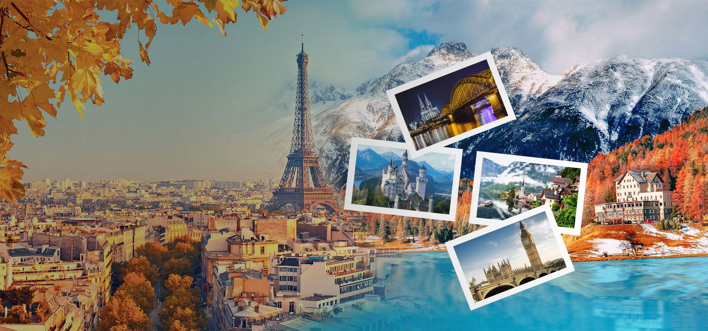

Перед подорожжю не забудьте взяти з собою важливі документи. Обов'язково мати паспорт або ID-картку
(для подорожей в межах країни), візу (якщо це необхідно для країни призначення), авіаквитки або інші
транспортні документи. Також корисно мати медичну страховку та копії важливих документів на випадок
непередбачених ситуацій. Якщо ви подорожуєте з дітьми, не забудьте про їхній паспорт або свідоцтво про
народження (для дітей до 16 років), а також нотаріально завірену згоду іншого з батьків (якщо дитина
подорожує лише з одним із батьків).
Азія 🌏 чи Америка 🌎?
2025-01-17, Автор: Довгань Максим
Азія чи Америка — вибір залежить від того, що ви шукаєте в подорожах. Азія захоплює своєю екзотичною
атмосферою, багатою історією та культурою. Ви можете відвідати величні храми Таїланду, сучасний Сінгапур
або тропічні острови Малайзії. Америку ж варто обрати для захоплюючих пригод: від карибських пляжів до
космополітичних мегаполісів, таких як Нью-Йорк чи Лос-Анджелес. Обидва континенти пропонують унікальні
можливості для подорожей — вибір залежить від вашого настрою та інтересів!

Мальовнича Європа 🌍
2024-12-30, Автор: Довгань Максим
Мандрівки Європою — це неймовірна можливість відкривати нові культури, історичні пам'ятки та мальовничі
пейзажі. Від класичних столиць, як Париж чи Рим, до затишних містечок, таких як Ґданськ в Польщі, Блед
у Словенії чи Сент-Еміліон у Франції, а також природних чудес — Альпи, озеро Комо в Італії або водоспад
Плитвич в Хорватії. Європа має все для будь-якого типу подорожей. Легкість пересування між країнами та
доступність громадського транспорту роблять подорожі комфортними й незабутніми. А замовити тур до майже
будь-якого міста Європи вам допоможе наша компанія "Подорожі від Макса"!